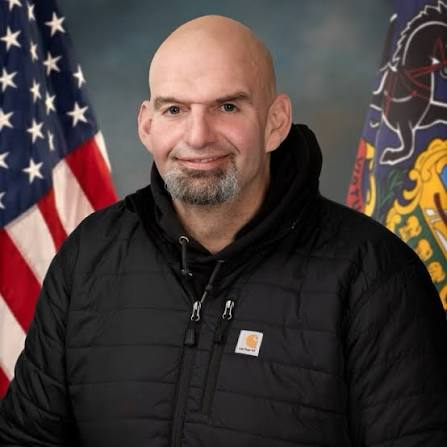

Breaking News
 September 10
September 10
by James Thornton
Democratic Senator John Fetterman’s appearance at a Republican convention has intensified debate over his political future and highlighted divisions within the Democratic Party.
Democratic Pennsylvania Sen. John Fetterman has sparked political speculation after making a video appearance at a Republican midterm convention, praising Republican Sen. Dave McCormick and pointing to areas where he believes Democrats and Republicans can work together. It was a rare moment of cross-party interaction in an election cycle that has been highly polarizing. Fetterman’s message was very much one of supporting American manufacturing and the steel industry, things that are particularly important in western Pennsylvania. He branded himself as a “common-sense Democrat” who would work with President Donald Trump and Republicans when he thinks their goals align. The appearance stood out immediately because it was at a Republican political event, not a bipartisan forum. Fetterman didn’t say he was switching parties, but the move fueled speculation from some Democrats and Republicans about his future political path. In some areas, like Israel, immigration and national security, Fetterman has moved away from the stances many Democrats have held. He has emerged as one of the Senate’s most independent voices, unafraid to publicly challenge members of his own party. But Fetterman has insisted he is a Democrat, brushing off suggestions he plans to leave the party. Indicators of his approach being rooted in independence rather than a political switch have been examples of his continued support for a handful of Democratic priorities and his voting record. The appearance highlights the challenges both parties are facing heading into the 2026 midterm elections. Fetterman’s very existence is a symbolic talking point for Republicans that some Democratic voters and politicians are drifting away from the party’s current course. Democrats fear intra-party battles before key Senate races.
Fetterman’s presence has reignited the debate over whether he’s part of a broader shift among moderate Democrats or a one-of-a-kind lawmaker with an unorthodox political style. He has often bucked traditional party expectations during his career, particularly on issues where he has taken positions at odds with many Democratic leaders. The Pennsylvania senator has built a reputation as a working-class politician focused on economic issues, labor and industrial communities. Steel production has been a core to his political persona, especially in a state where industrial jobs are still a major voting issue. Fetterman praised McCormick’s backing of the steel industry at the Republican convention, and called for bipartisanship to protect American workers. The message played on themes frequently used by Trump and Republican candidates, including domestic manufacturing and economic nationalism. The look has been likened to previous instances of Democrats going to Republican events or campaigning for Republican candidates. Such moves are unusual, political analysts say, because they can create a lot of tension in a politician's own party. Some Democratic critics have said Fetterman’s recent positions make it difficult for him to argue for the party’s larger interests. Some say his public feuds give Republicans ammunition to paint Democrats as a divided party. Republicans have in turn pointed to Mr Fetterman’s remarks as proof that some Democrats are uneasy about the path their own party is heading down. The White House also promoted the appearance on social media, raising the political stakes of the moment. Despite the attention, Fetterman has repeatedly denied speculation he will flip to become a Republican. He has said that his independence within the Democratic Party allows him to represent Pennsylvania voters who don’t always fall in line with the leadership of either party.
The Fetterman firestorm comes as Pennsylvania is one of the country’s most important political battlegrounds ahead of the 2026 midterm elections. Its large population, competitive electorate and mix of urban, suburban and rural voters have made it a key player in national elections. Of particular interest has been the relationship between Fetterman and GOP Sen. Dave McCormick, seen as a leading contender in the Republican effort to hold onto Pennsylvania. Fetterman’s praise of McCormick at a GOP event has given the senator a boost with Republican audiences. Republicans have sought to capitalize on the moment to demonstrate their message on manufacturing, energy and national identity resonates with the broader electorate, not just party regulars. Fetterman's working-class background and his Pennsylvania ties make his comments particularly helpful to Republicans seeking to win over similar voters. The episode poses a difficult political dilemma for Democrats. But Democratic Sen. Fetterman has taken independent stances that could make party unity more difficult in a cycle where Democrats are trying to win back or hold onto Senate seats. It also fits a broader trend in American politics in which some voters and politicians are growing more skeptical of sticking too close to the party line. Disenfranchised voters from the old political spectrum have noticed the politicians that are willing to put personal identity ahead of party loyalty. But crossing party lines is a risk. “Politicians who reach across the aisle may pick up independent support but risk alienating their own political base. Fetterman’s status will likely be under a microscope as Pennsylvania’s political stature means even symbolic gestures can impact national campaign strategy.
It’s unclear what the long-term impact of Fetterman’s Republican convention appearance will be. The event has generated a lot of attention, but the senator has not indicated any plans to leave the Democratic Party or change his official political registration. Fetterman said his style reflects a willingness to work when policies align, not a rejection of Democratic values. His backing of labor issues, LGBTQ rights and other Democratic priorities has been pointed to by him as proof of his party loyalty. But the episode highlights the growing challenge of keeping a party intact in an age of extreme political polarization. Independent-minded senators can be power brokers, but they can also be pressured by activists and party organizations. Fetterman’s look is a powerful political message for Republicans as the midterms loom. The party can use the occasion to argue that Democratic policy concerns are not just for the Republican base of voters. The challenge for Democrats will be to set aside their internal differences and keep their eyes on the electoral prize. Some party leaders may be reluctant to face off directly with Fetterman, who continues to connect with some voters in Pennsylvania. His independent stand may decide his political future depending on how the voters respond. If his strategy continues to connect with moderates and working-class voters, it could lift his standing in national politics. If it turns off Democratic voters, it could create new problems for his political career. Fetterman is still a Democrat, but his unusual presence at a Republican convention has ignited a national conversation on party identity, political independence and the future of American politics.

James Thornton is a U.S. business reporter covering markets, technology, and economic policy.